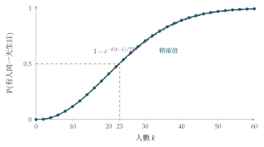

STEP II 2007，第 13 題
繼續之前，請先閱讀題目（原題為英文）。題目載於 STEP Support Programme 的題目資料庫： step.maths.org/questions/07-s2-q13
引子
一個房間裏要有多少人，才會令其中兩人同一天生日的機會大於一半？大多數人會猜 \(180\) 左右，即 \(365\) 的一半。答案卻是 \(23\)。在一班三十人的課堂裏，有人同一天生日的概率（probability）是 \(70\%\)；在五十人的派對上，則是 \(97\%\)。
這個結果令人意外，是因為我們把兩個不同的問題混為一談：「有沒有人與我同一天生日？」（這確實需要大約 \(253\) 人）和「有沒有任何兩個人同一天生日？」。\(23\) 個人可以組成 \(\binom{23}{2} = 253\) 對，而每一對都是一次出現相同生日的機會。這道題把這個直覺變得精確，而同樣的數學亦決定了保護你銀行戶口的密碼技術有多安全。
動筆之前
為甚麼計算沒有兩位賓客同一天生日的概率會比較容易？請賓客排成一行：第二位避開第一位生日的機會是多少？第三位同時避開前兩位的機會又是多少？
「至少有兩人相同」包含許多互相重疊的情況（兩人相同、三人相同、兩對不同的人各自相同……）。它的補事件（complement）「全部不同」卻是單一而簡潔的事件。第二位賓客避開第一位生日的概率是 \(\frac{364}{365}\)；在此條件下，第三位同時避開前兩位的概率是 \(\frac{363}{365}\)；如此類推。
逐步解題
階段 1 一個有用的近似
\(y = e^{-x}\) 在 \(x = 0\) 處的切線（tangent line）是甚麼？
由於 \(e^{-x} = 1 - x + \frac{x^2}{2} - \cdots\)，當 \(x\) 很小時，我們有 \(e^{-x} \approx 1 - x\)。取 \(x = r/n\)，得 \[\frac{n - r}{n} = 1 - \frac{r}{n} \approx e^{-r/n}. \qed\] 誤差約為 \(\frac{r^2}{2n^2}\)，當 \(r\) 遠小於 \(n\) 時，這個誤差很小。
階段 2 有人同一天生日的概率
\(k\) 個生日全部不同的概率是 \[\frac{365}{365}\cdot\frac{364}{365}\cdot\frac{363}{365}\cdots\frac{365 - (k - 1)}{365} = \prod_{r=0}^{k-1}\frac{365 - r}{365}.\] 對每個因子使用上述近似（approximation），再利用指數函數相乘時指數相加這個性質， \[\prod_{r=0}^{k-1}e^{-r/365} = \exp\Bigl(-\frac{0 + 1 + \cdots + (k - 1)}{365}\Bigr) = \exp\Bigl(-\frac{k(k - 1)}{730}\Bigr).\] 因此，至少有一對人同一天生日的概率約為 \(1 - e^{-k(k-1)/730}\)。■
看看指數：\(\frac{k(k-1)}{730} = \binom{k}{2}\Big/365\)。用文字表達，這說明了甚麼？
它是賓客的配對數目，乘以某一對人同一天生日的概率 \(\frac{1}{365}\)：也就是生日相同的配對數目的期望值（expected number）。這個近似告訴我們，沒有任何配對相同的機會是 \(e^{-(\text{相同配對的期望數目})}\)，這又一次透露出泊松分佈（Poisson distribution）的影子，正如 第 9.8 節 所見。
階段 3 二十三
我們需要 \(1 - e^{-k(k-1)/730} \geq \frac12\)，即 \(e^{-k(k-1)/730} \leq \frac12\)，亦即 \[\frac{k(k - 1)}{730} \geq \ln 2 \approx \frac{253}{365}, \qquad\text{即}\qquad k(k - 1) \geq 506.\] 由於 \(22 \times 21 = 462\) 而 \(23 \times 22 = 506\)，最小的值是 \(k = 23\)。■
（\(23\) 位賓客時的精確概率是 \(0.507\)，\(22\) 位賓客時是 \(0.476\)，所以這個近似給出了正確答案。）
階段 4 與主人同一天生日
對每位賓客來說，不與主人同一天生日的概率是多少？在這方面，各位賓客之間是否互相獨立（independent）？
每位賓客各自獨立地以概率 \(\frac{364}{365} \approx e^{-1/365}\) 避開主人的生日。因此 \(k\) 位賓客中無人與主人同一天生日的概率是 \(\bigl(\frac{364}{365}\bigr)^k \approx e^{-k/365}\)，而我們需要 \[e^{-k/365} \leq \tfrac12, \qquad\text{即}\qquad k \geq 365\ln 2 \approx 253.\] 所以必須有 \(253\) 位賓客。■
這個對比正是重點所在：要與某一個指定的人生日相同，需要 \(253\) 位賓客；但要有某一對人生日相同，只需 \(23\) 人，因為 \(23\) 個人可以組成 \(253\) 對。

回顧
利用補事件。「全部不同」只是一個乘積；「至少有一對相同」卻是一團亂麻。
先線性化，再取指數。把每個因子 \(1 - x\) 換成 \(e^{-x}\)，乘積就變成了和。
數配對。指數正是配對的數目乘以一對人相同的機會。\(k(k-1)\) 中的平方，就是這個悖論的全部解釋。
背後的數學
平方根定律
若把 \(365\) 天換成 \(n\) 個等可能的日子，同樣的論證給出 \[\mathrm{P}(\text{有人相同，人數為 } k) \approx 1 - e^{-k^2/(2n)},\] 所以只要 \(k\) 達到 \(\sqrt{n}\) 左右，而不是 \(n\)，就很可能出現相同的情況。更準確地說，概率在 \(k \approx 1.18\sqrt{n}\) 時達到 \(\frac12\)，而在首次出現重複之前你需要遇到的人數，期望值約為 \(\sqrt{\pi n/2}\)（當 \(n = 365\) 時，約為 \(24.6\)）。這條平方根定律（square-root law）正是巧合如此常見的原因：在任何一大批事件之中，總很可能有某一對在某方面吻合，儘管任何一個指定的吻合都不大可能發生。
生日攻擊
電腦會計算檔案的雜湊值（hash），以檢查檔案有否被竄改：那是一個指紋，可能的取值有（比方說）\(n = 2^{128}\) 個。偽造者若想得到兩份雜湊值相同的文件（一份無害的合約和一份欺詐的合約），並不需要試 \(2^{128}\) 份文件。根據生日問題的論證，為每份文件各自產生大約 \(\sqrt{2^{128}} = 2^{64}\) 個變體，就很可能得到一對相同的雜湊值。這種生日攻擊（birthday attack）正是現代雜湊函數採用 \(256\) 位元或以上的原因：有一半的位元因平方根定律而白白損失。類似的計算亦決定了隨機識別碼必須有多長，才能令兩部電腦永遠不會碰巧選中同一個。
生日問題通常歸功於馮·米塞斯（Richard von Mises），他在 1939 年討論過這個問題，不過它在此之前已經流傳。據說 Harold Davenport 亦更早知道這個問題，只是覺得它太簡單而沒有發表。按 Warren Weaver 的說法，他在第二次世界大戰期間喜歡在軍官的晚宴上示範這個問題：他打賭在場二十二人之中有兩人同一天生日，結果輸了，直至一位女侍應透露她與其中一位軍官同一天生日。
思維技巧
當「至少一個」很複雜時，就去求「一個也沒有」的概率。當乘積難以處理時，把每個因子近似為指數函數，然後把指數相加。
這兩個做法在大學裏都是標準手法。第二個，即 \(1 - x \approx e^{-x}\)，是泊松近似理論的起點，也是漸近方法（asymptotic methods）的起點；後者用來估計那些複雜得無法精確計算的量。
延伸練習
首次重複。試做 STEP II 2014，第 13 題。這道題研究隨機數產生器（random number generator）首次出現重複的值，其實是換了個面貌的生日問題，並把有關概率化成兩個出人意表的恆等式（identities）。
三人相同。大約需要多少人，才會令某三人同一天生日的機會大於一半？（提示：同一天生日的三人組數目的期望值是 \(\binom{k}{3}/365^2\)。令它約等於 \(\ln 2\)。）真正的答案是 \(88\)。
差之毫釐。需要多少人，才會令兩人的生日在同一天或相鄰兩天的機會達到一半？
不均勻的生日。現實中的生日並非均勻（uniform）分佈。證明若各日的概率為 \(p_1, \ldots, p_{365}\)，則兩個人同一天生日的機會是 \(\sum p_i^2\)，並且當所有 \(p_i\) 相等時這個值最小。（所以不均勻只會令相同的情況更容易出現。）
延伸閱讀
William Feller, An Introduction to Probability Theory and Its Applications, Vol. 1（Wiley），第 II 章。生日問題及其各種近似。
Persi Diaconis & Frederick Mosteller,「Methods for studying coincidences」，Journal of the American Statistical Association 84 (1989)。解釋巧合為何常見；非常易讀。
David Hand, The Improbability Principle（Bantam）。平方根定律，以及不大可能的事情為何時刻都在發生的其他原因。